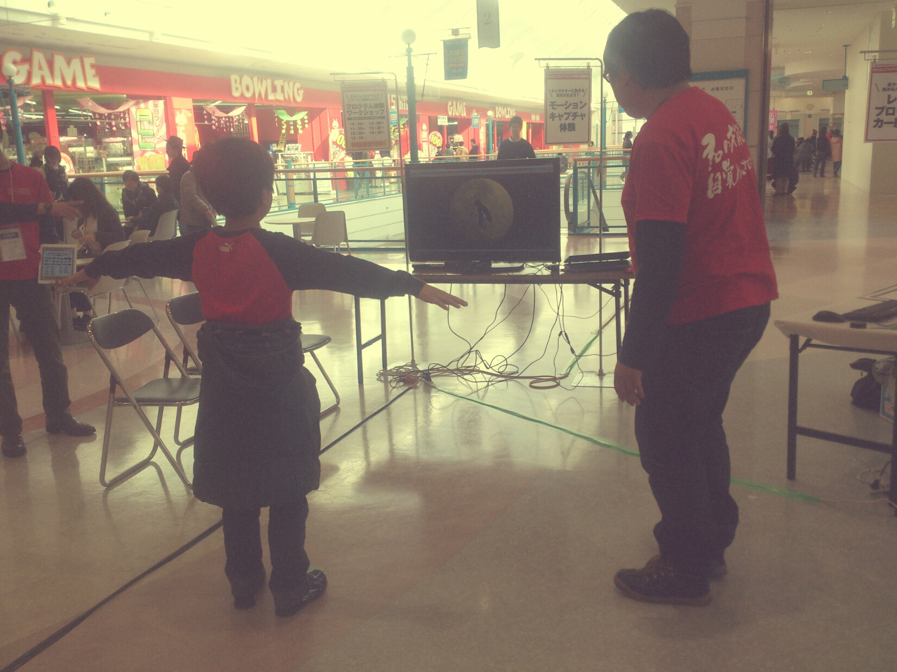

Unity*Kinect
Unity, Kinect を使用して作成したインタラクティブな作品．
Kinectが設置されている画面の前で動くと画面中の人影も一緒に動き，手を振ると流れ星が流れます．
2014年度夏季インターンでの課題として作成したものでしたが，学祭や市内の一般展示でも展示スペースを設けてもらい結構人気がありました．
月にしたというところが ポイントです．また，手を振ると流れ星が流れるといった仕組みにしたのですが
星の流れる速度を比較的低速にし， ゆっくりを光をこぼしながら流れていく様にしたということも小さなこだわりでした．

2014年度夏季インターンでの課題として作成したものでしたが，学祭や市内の一般展示でも展示スペースを設けてもらい結構人気がありました．
やったこと＆Point
Kinectで人の動きをキャプチャして影として表示しインタラクティブなディスプレイと触れ合っている様子を再現してみよう！という案が課題でした．- Unityの大まかな使用法を本で学習，サンプルを作ってみる
- UnityとKinectの連帯方法についてぐぐる
- Kinect SDKをインストール
- モーションをキャプチャしてボーンを動かしてみる
- 作品内容思案，作成作業
- 床，空間内ディスプレイ，人影の設置
- ディスプレイの内容の思案作り込み
- 月の設置，色，位置の調節
- 月の表面にパーティクルを付加
- 流れ星の設置，動作の設定
- 一定のモーションをした時に流れ星が流れ，月と衝突した時に流れ星が消えるようスクリプトを書く
- 完成！
月にしたというところが ポイントです．また，手を振ると流れ星が流れるといった仕組みにしたのですが
星の流れる速度を比較的低速にし， ゆっくりを光をこぼしながら流れていく様にしたということも小さなこだわりでした．